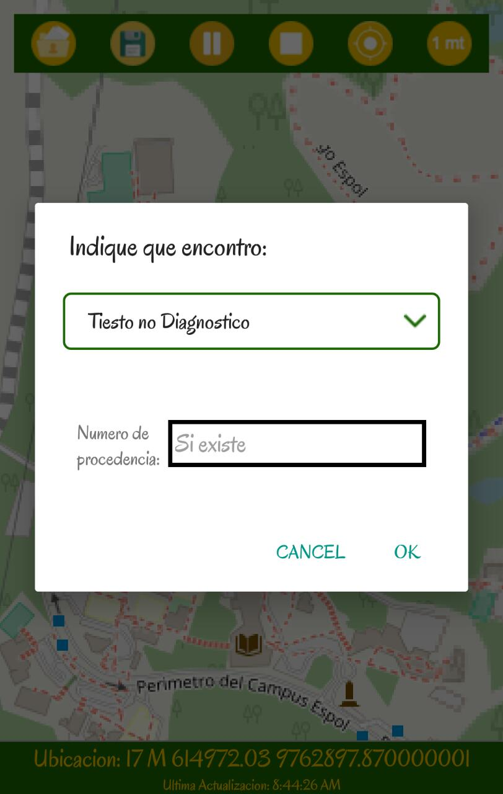

Inicio¶

Archaeology es una aplicación dirigida a arqueólogos, como apoyo en sus actividades de expedición
Esta aplicación te permite guardar los recorridos de un arqueólogo. Te permite generar archivos GeoJson en los cuales estarán guardados los puntos en el mapa sobre cuales has recorrido en una expedición.
Funcionalidades:¶
Registrar en tiempo real y con alta exactitud el recorrido generado
Marcar los hallazgos que se realizaron y almacenarlos como hitos en un mapa
Seleccionar entre GPS y RTK para guardar el recorrido
Enviar por correo los registros de los recorridos por medio de tu cuenta de Gmail
Seleccionar y guardar zonas geográficas en mapas
Definir los modos dde registrar el recorrido (por tiempo o por distancia)
Qué datos se capturan¶
Archaelogy captura datos geolocalizados de latitud, longitud y altura (ISO 6709), en conjunto con datos sobre los hitos encontrados.
Hitos¶
Los tipos de hitos para marcar son:
Tiesto no Diagnóstico
Tiesto Diagnóstico
Ítica
Hueso
Hueso Animal
Hueso Humano
Hollo de poste
Metal
En este se puede marcar el número de procedencia de cada hito
Un hito corresponde a una marca donde se hizo un hallazgo
{kind=link}
Modo de uso¶
Archaeology presenta dos modos para captura de datos, uno es por RTK (por medio de la conexión a un dispositivo piksi) y el otro por GPS (del dispositivo)
Modo GPS
En este modo se utiliza el receptor GPS del dispositivo móvil, que se conecta con al menos tres satélites que estén cerca. Cabe recalcar que con solo tres satélites conectados se puede triangular posición respecto longitud y latitud, pero con un cuarto se puede definir la elevación.
En general los dispositivos móviles también usan otra fuente de datos para poder triangular su ubicación, llamada A-GPS (Assited Global Positioning System).
La exactitud del GPS del dispositivo móvil varia cerca de 50 metros.
Por defecto Archaeology usa el Modo de GPS.
Modo RTK
En este modo por medio de una conexión serial se debe comunicar al dispositivo móvil con un piksi (de aquí en adelante llamado Rover), a su vez se debe tener otro piksi que actúe como base en el punto de la expedición.
La forma como buscan los datos de geolocalización es distinta, usa la técnica de cinemática en tiempo real (RTK), para determinar la ubicación de forma precisa.
La exactitud conseguida por el modo RTK es de centímetros.
Desarrolladores¶
Para encontrar la documentación de Archaeology diríjase a su repositorio en Github: Archaeology.
«En la siguiente sección podrá ver más sobre lo que puede hacer con Archaeology»